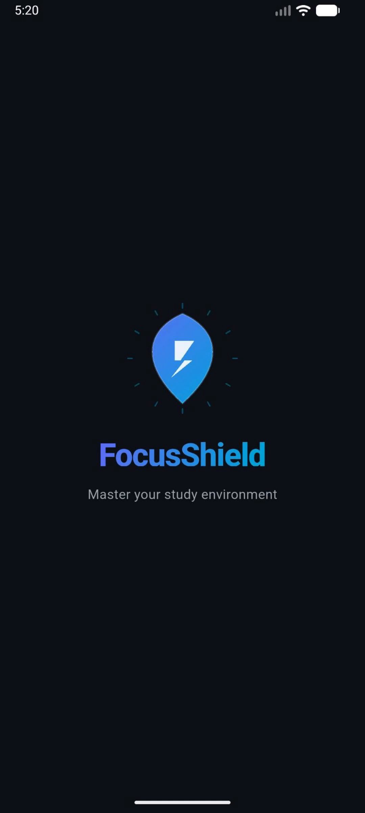
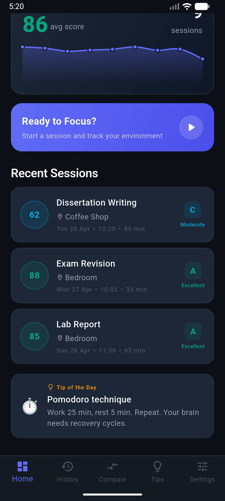
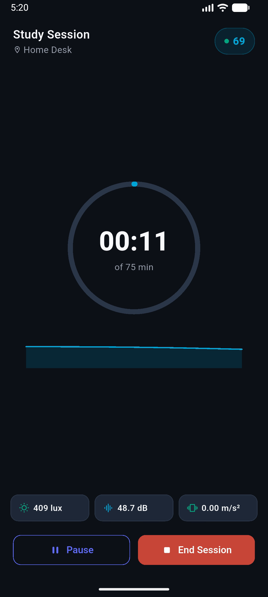
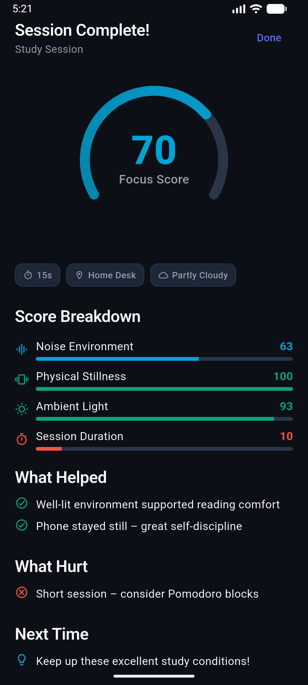
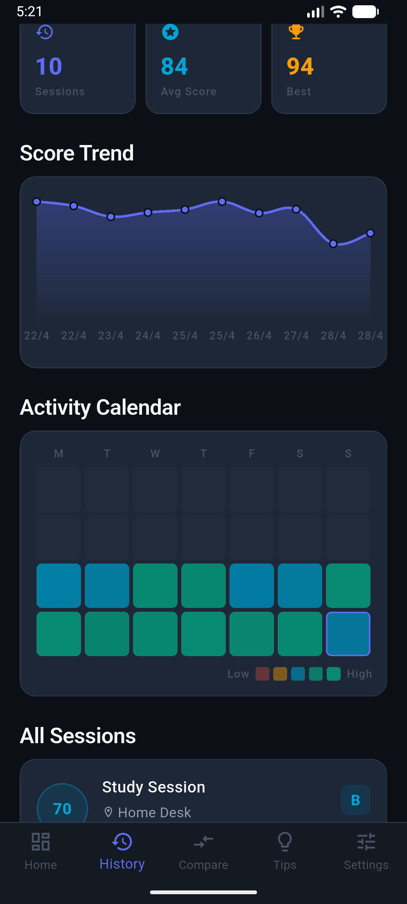
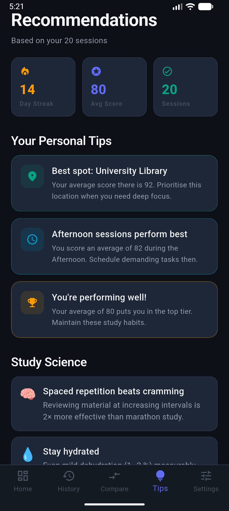

A Flutter mobile application that helps students understand how noise, light, movement, and environmental context affect study concentration.
Uses the phone accelerometer to detect movement and combines it with environmental indicators during study sessions.
Generates a composite focus score based on noise, movement, light, and session duration.
Stores sessions over time and turns them into trend views, environment comparisons, and actionable advice.
sensors_plusSharedPreferencesfl_chart
Splash

Dashboard

Live Session

End Report

History Analytics

Recommendations